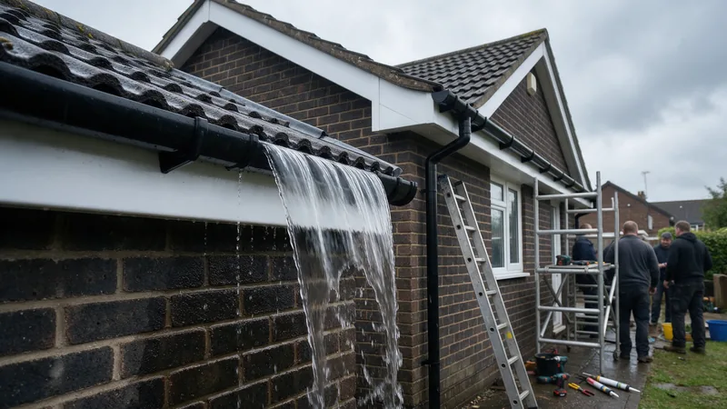
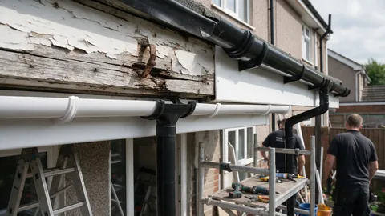

Generated photoGenerated for this demo. Not a photograph of a real job.
Start by watching it rain
The single most useful thing anybody can do about an overflowing gutter is stand outside in the rain for two minutes and look at it. Not from the ladder, from the garden. Where does the water leave the run, is it one spot or several, does it come over the front edge or trickle down the back, and does it do it in drizzle or only in a downpour?
Those answers narrow it down to one of four things before anybody climbs anything. Take a short video while you are out there. It is worth more than any description over the phone.
The four reasons
How to tell which one you have
Over the front edge, in one spot, whenever it rains properly. A blockage, usually sat at or near the outlet. The most common single answer and the cheapest to put right.
Over the front edge in the middle of a long run, with a tide mark there in dry weather. The fall. Either it was never set properly or a bracket has dropped, and water is standing in a belly instead of moving.
Dripping steadily from one point under the gutter, with a green stain down the wall below it. A joint. The seal has gone. It does not look urgent and it is quietly keeping that bit of wall wet all year.
Clear in ordinary rain, over the whole front edge in a downpour. Volume. The run cannot take what the roof delivers, and no amount of cleaning changes that.
Water running down the back of the gutter rather than off the front. This one is worth a special mention, because it is the most damaging and the least noticed. It usually means the gutter is set slightly too far out or too low for the tile edge, so water running off the tiles misses the back of the run and goes straight down behind it on to the fascia board. It is how a timber fascia rots from the top while looking fine from the ground.
Where the water is supposed to go
What the moss tells you
If a lot of what comes out of your gutters is moss and grit rather than leaves, that material has washed off the surface of your tiles. On an older concrete tiled roof that is normal weathering and not a worry on its own. If it is a lot every year, it is worth having somebody look at the roof itself, which is a roofer rather than a roofline firm.
The practical point is that moss and grit make a heavier, denser blockage than leaves do. Leaves sit on top and water finds its way through them. Silt sets in the bottom of the run like wet sand and stops it moving at all, which is why the house with no trees over it can be the one that blocks worst.
What not to do about it
Do not go up in the wind or the wet, which is the only genuinely dangerous part of any of this. Do not poke a blockage downwards into the downpipe, because a gutter full of silt is a morning's work and a blocked pipe at ground level is a worse one. Do not run sealant round the outside of a leaking joint. And do not put a full length leaf guard on a run under conifers, because the needles mat on top of it and you end up with a blockage you cannot see or reach.
When it is worth getting somebody out
Within a week or two of noticing it, not within the hour. The cost of a gutter overflowing is in the months, not the night. What is worth being quicker about is water running down the back of the gutter, anything hanging loose, and any staining that is appearing inside the house rather than outside it.
Written for this demo from general trade knowledge. It is not advice on your property, and anything structural or on the roof itself wants somebody looking at the actual house.
More advice
While you are here.
 Generated photo
Generated photoFascias and soffits: what they do
Two boards most people have never looked at properly, one of which is keeping the air moving in your loft.

Generated photoRepair or replace your roofline
When one length and a seal will do, when the whole run has had its day, and the shortcut to be careful of.
Want somebody to look at the actual run?
Tell us which side of the house and your postcode. Twenty minutes with a ladder beats any article.